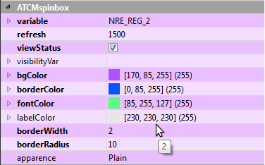

Al seleccionar el elemento, sus propiedades aparecen en la ventana inferior derecha de la ventana de Qtcreator en la sección titulada ATCMspinbox. Modificando una o más de estas propiedades se puede personalizar el aspecto gráfico y algunas características. Para realizar la modificación, seleccione la columna derecha de la línea correspondiente.

En detalle para las características estarán disponibles:
variable: para definir la variable de la Crosstable de destino en la que escribir el valor actual del spinbox, deberá insertar el nombre de la variable de destino.
value: la vista previa del valor visualizado. ATENCIÓN: no corresponde al valor por defecto.
refresh: tiempo de refresco del objeto expresado en milisegundos.
viewStatus: si marcado tendrá un color rojo o verde respectivamente si la configuración de la variable ha fallado o no y si el borde es visible.
visibilityVar: si desea vincular la visibilidad o no del objeto en función del estado de una variable, debe introducir el nombre de la variable de destino.
En detalle para el aspecto gráfico estará disponible:
bgColor: determina el color de fondo del objeto.
borderColor: determina el color del borde del objeto, sólo si el grosor del borde es mayor que cero.
fontColor: determina el color del texto del objeto.
labelColor: determina el color de la etiqueta en la que aparecerá el texto del spinbox.
borderWidth: es el espesor en píxeles del borde del objeto.
borderRadius: es el radio de curvatura de los bordes del objeto.
apparence: es el estilo con el que quieres mostrar el objeto.
NOTA: en todas las propiedades, excepto en los ATCMplugins, es posible visualizar el “Context Help” de Qt para tener una descripción del funcionamiento: seleccionar la línea deseada y pulsar la tecla “F1” del teclado.
Para utilizar las propiedades del objeto por código, escriba en Help→Index: QDoubleSpinBox